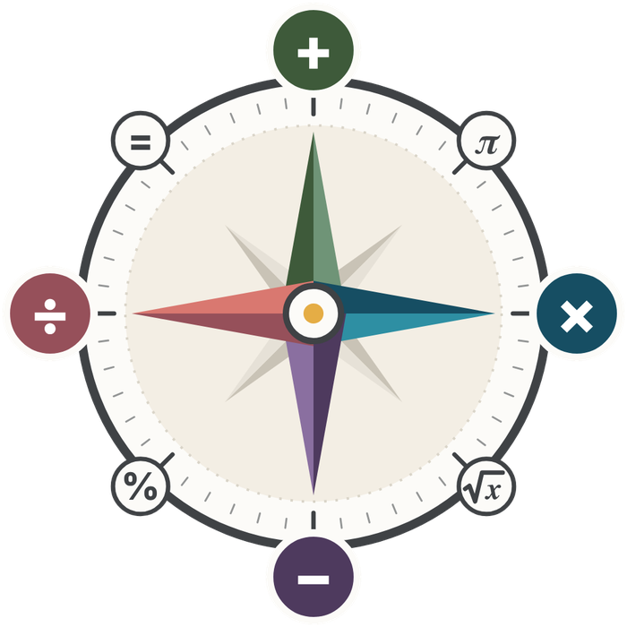

Mattekompassen
Din väg genom matematiken i årskurs 7–9
Välj din årskurs
7Åk 7
Matematik X
- Planering
- Lektioner
- Problemlösning
- Repetitionsuppgifter
8Åk 8
Matematik Y
- Planering
- Lektioner
- Problemlösning
- Repetitionsuppgifter
9Åk 9
Matematik Z
- Planering
- Lektioner
- Problemlösning
- Repetitionsuppgifter
Åk 9 · 12 och 14 maj 2027
Nationella prov i matematik
Så går provet till, och så tränar du inför det med övningsprov.
–dagar kvar
Matematikens grunderBli säkrare på grunderna. För alla årskurser.
Börja träna →